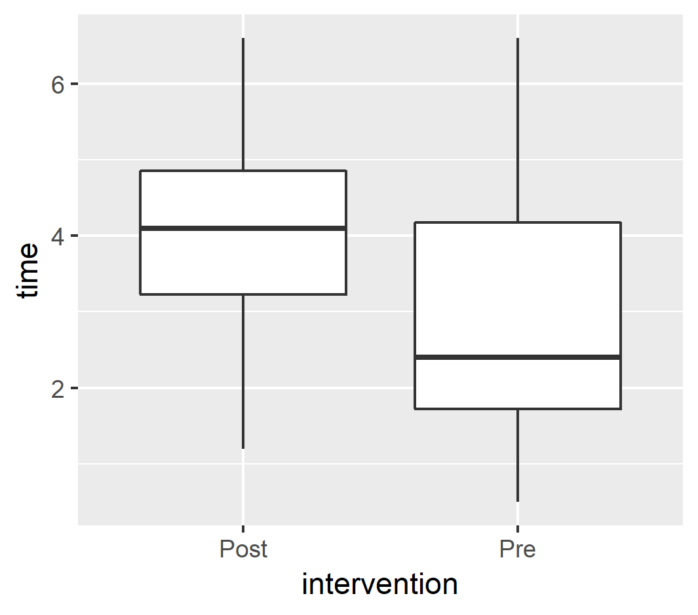

4장: 깔끔한 데이터 필요성과 생성 방법
이 장에서 배울 내용
- 깔끔한 데이터를 식별하는 방법
tidyr로 지저분한 데이터를 깔끔하게 만드는 방법- 긴 데이터와 넓은 데이터 형식
- 깔끔한 데이터의 필요성과 활용 사례
이 장을 마치면 데이터 시각화, 데이터 조작 및 데이터 정리 문제의 약 90%를 처리할 수 있습니다. 이 부트캠프를 넘어 더 많은 것을 배울 수 있는 충분한 자신감을 얻으셨기를 바랍니다.
다음 학습으로 넘어가시면 됩니다.
깔끔한 데이터란?
깔끔한 데이터(tidy data)는 다음과 같은 속성을 갖는 데이터로 정의됩니다.:
- 각 행은 관측치에 해당합니다.
- 각 변수는 컬럼(열)입니다.
- 관측된 개별 값들은 하나의 셀에 해당합니다.

한 가지 염두에 두어야 할 것은 컬럼이 분리된 별도의 변수가 아닐 수 있다는 것입니다. 이 경우는 컬럼 이름이 범주형 변수에서의 하나의 범주(수준, levels)로 간주될 수 있습니다. 이것은 범주로 간주될 각각의 컬럼들이 하나의 관측치에 대응함을 의미합니다.
dem_score <- read.csv("data/dem_score.csv")
head(dem_score[,1:6])tidyr::pivot_longer()
tidyr 패키지의 pivot_longer()는 여러 컬럼을 가져다 하나의 컬럼에 합치는 함수입니다. pivot_longer()는 다음의 인수를 취합니다.:
cols- 하나의 컬럼으로 통합할 대상 컬럼들.country변수를 제외한 모든 변수를 하나의 컬럼에 통합하고 싶다면, 이 인수값으로-country을 사용합니다.
tidyselect 패키지에 대해서 다루지 않았지만, 이름을 지정하는 형식에 따라서 변수(컬럼)을 선택할 수 있는 몇 가지 방법이 있습니다. (tidyselect에 대한 자세한 내용은 다음 URL을 참조하세요.: https://tladeras.shinyapps.io/learning_tidyselect)
(역자 주) tidyselect에서 이름을 지정하는 방법 중의 하나가 이름 앞에 -를 붙이는 방법입니다. 이 의미는 -가 붙은 변수를 제외한 모든 변수를 취한다는 의미입니다. 앞의 -country가 이 형식을 사용한 것입니다.
names_to- 통합할 개별 컬럼 이름들이 통합되어, 범주형 데이터의 범주로 만들어질 변수(컬럼)의 이름values_to- 통합할 개별 컬럼의 값들이 통합되어 만들어질 변수(컬럼)의 이름
(역자 주) 데이터 세트의 여러 컬럼을 통합해서 하나의 컬럼으로 합치면 당연히 컬럼의 개수는 줄어듭니다. 그리고 반대급부로 행(관측치)의 개수가 늘어납니다. 데이터 세트의 모양은 직사각형 모양입니다. pivot_longer()을 사용하기 전의 직사각형은 가로로 넓은 모양인데, pivot_longer()을 수행하면 세로로 긴 직사각형 모양으로 데이터 세트가 변형됩니다. 그래서 세로로 길어진다는 표현을 써서 pivot_longer라는 이름으로 함수 이름을 작명한 것입니다.
dem_score %>%
pivot_longer(cols = -country,
names_to = "year",
values_to = "score")학습 지침
- 위의
pivot_longer구문을 실행해 보세요. mutate()를 이용해서year앞에 있는X를 제거하세요.
- 결과를
gatheredData에 할당하세요.
library(dplyr)
library(tidyr)
library(stringr)
dem_score <- read.csv("data/dem_score.csv")
gatheredData <- dem_score %>%
pivot_longer(cols = -country,
names_to = " ____ ",
values_to = " ____ ") %>%
mutate(year=str_replace(year, "X",""))
head(gatheredData)library(dplyr)
library(tidyr)
library(stringr)
dem_score <- read.csv("data/dem_score.csv")
gatheredData <- dem_score %>%
pivot_longer(cols = -country,
names_to = "year",
values_to = "score") %>%
mutate(year=str_replace(year, "X",""))
head(gatheredData)tidyr::pivot_wider()
pivot_wider()는 pivot_longer()의 반대 기능을 수행합니다. 즉 하나의 컬럼을 여러 컬럼으로 해체합니다.
하나의 관측으로 구성되는 관련된 측정값들을 따로 수집하거나, 누군가가 너무 열성적으로 데이터 한 곳으로 끌어모았을 때 이런 작업을 수행할 상황이 발생할 수 있습니다.
pivot_wider() 함수는 다음과 같은 인수를 사용합니다.:
names_from- 여러 컬럼으로 확장할 때, 만들고 싶은 변수(컬럼) 이름이 포함된 컬럼 - 컬럼 이름으로 만들어집니다.values_from- 여러 컬럼으로 확장할 때, 만들고 싶은 변수의 값이 들어 있는 컬럼 - 컬럼의 실제 값으로 만들어집니다.
spreadData <- gatheredData %>%
pivot_wider(names_from = "year",
values_from = "score")(역자 주) 데이터 세트의 하나의 컬럼을 해체해서 여러 컬럼으로 합치면 당연히 행(관측치)의 개수는 줄어듭니다. 그리고 반대급부로 변수(컬럼)의 개수가 늘어납니다. 데이터 세트의 모양은 직사각형 모양입니다. pivot_wider()을 사용하기 전의 직사각형은 세로로 긴 모양인데, pivot_wider()을 수행하면 가로로 넓은 직사각형 모양으로 데이터 세트가 변형됩니다. 그래서 가로로 넓어진다는 표현을 써서 pivot_wider라는 이름으로 함수 이름을 작명한 것입니다.
학습 지침
gatheredData데이터를 다시 가로로 넓은 형태로 변환합니다. 각 컬럼은country를 가져야 합니다. (힌트: 인수값에country를 사용해야 합니다.)- 결과를
spreadData에 할당합니다.
dem_score <- read.csv("data/dem_score.csv")
library(dplyr)
library(tidyr)
library(stringr)
gatheredData <- dem_score %>%
pivot_longer(cols = -country,
names_to = "year",
values_to = "score") %>%
mutate(year=str_replace(year, "X",""))
spreadData <- gatheredData %>%
pivot_wider(names_from = " ____ ",
values_from = " ____ ")
head(spreadData)dem_score <- read.csv("data/dem_score.csv")
library(dplyr)
library(tidyr)
library(stringr)
gatheredData <- dem_score %>%
pivot_longer(cols = -country,
names_to = "year",
values_to = "score") %>%
mutate(year=str_replace(year, "X",""))
spreadData <- gatheredData %>%
pivot_wider(names_from = "country",
values_from = "score")
head(spreadData)dplyr::separate()
다음처럼 서로 다른 값들을 구분자로 묶어서 하나의 컬럼으로 만들어본 적이 있습니까?
"value1/value2/value3"separate()는 구분자로 묶여있는 하나의 문자열 변수를 분리하여, 여러 개의 변수로 만들기 위해서 제공됩니다. separate()는 다음의 인수를 사용합니다.:
health_code_separated <-
health_code_example %>%
separate(col = HealthCodeEncounterCode,
into = c("HealthCode", "EncounterCode"), sep = "/")col- 분리할 대상이 되는 변수 이름입니다.into- 분리되어 새로 만들어질 변수들의 이름입니다.sep- 분리할 기준이 되는 구분자로, 대상 변수의 값에 실제로 포함된 문자열이어야 합니다.
학습 지침
health_code_example데이터 세트에서HealthCodeEncounterCode를 분리하여HealthCode와EncounterCode변수를 생성합니다. 그리고 그 결과를health_code_separated에 할당합니다. 다음은health_code_separated의 처음 몇 건을 발췌한 것입니다.:
# A tibble: 5 x 3
PatientID HealthCodeEncounterCode timeElapsed
<chr> <chr> <dbl>
1 P1 410/22 20
2 P2 410/20 15
3 P3 511/22 16
4 P4 511/20 17
5 P5 511/20 30HealthCode==410조건을 만족하는 환자를 필터링하여,patients410에 할당합니다.head()로patients410의 앞부분 일부를 표시합니다.
library(tidyr)
library(dplyr)
library(readr)
health_code_example <-
read_csv("data/healthExample.csv")
health_code_separated <-
health_code_example %>%
separate(col = ____ ,
into = c( ____ , ____ ),
sep = ____ )
patients410 <- health_code_separated %>%
filter(HealthCode == ____ )
patients410library(tidyr)
library(dplyr)
library(readr)
health_code_example <-
read_csv("data/healthExample.csv")
health_code_separated <-
health_code_example %>%
separate(col=HealthCodeEncounterCode,
into=c("HealthCode", "EncounterCode"),
sep="/")
patients410 <- health_code_separated %>%
filter(HealthCode==410)
patients410긴 데이터 대 넓은 데이터
깔끔한 데이터 뿐만 아니라, 긴 데이터와 넓은 데이터도 가능합니다. 관측치(행)의 개수가 변수(컬럼) 개수보다 많은 형식의 데이터를 긴 데이터(long data)라 부릅니다. 그리고 변수(컬럼)의 개수가 관측치(행) 개수보다 많은 형식의 데이터를 넓은 데이터(wide data)라 부릅니다. 우리는 앞에서 넓은 데이터(dem_score)를 pivot_longer()로 긴 데이터로 변환해 보았습니다. 또한 그것을 pivot_wider()로 다시 넓은 데이터로 변환했습니다.
(역자 주) 일반적으로 데이터 분석 작업은 긴 데이터로 형식의 데이터 세트를 사용합니다. 왜냐하면 이 형식의 데이터가 데이터 조작과 집계를 쉽게할 수 있으며, 대부분의 분석 모델의 알고리즘이 이 형태의 데이터 구조에 기초하기 때문입니다. 그리고, 변수의 개수가 상대적으로 은 것도 유리합니다.
데이터가 긴 데이터 형식이기 때문에 무엇이 가능한지 살펴보겠습니다. fertilityTidy라는 이름의 긴 데이터 형식의 데이터 세트로 두 가지 통계량을 집계할 것입니다.
학습 지침
fertilityTidy데이터를 살펴 보세요. 다음은fertilityTidy의 일부분입니다.:
Country Year fertilityRate
1 Afghanistan 1800 7.00
2 Albania 1800 4.60
3 Algeria 1800 6.99
4 Angola 1800 6.93
5 Antigua and Barbuda 1800 5.00
6 Argentina 1800 6.80- 먼저,
dplyr를 사용하여 국가(Country)별로 평균 출산율을 집계하여meanCountryRate변수에 넣습니다. - 집계된 데이터를
fertilityMeanByCountry에 할당합니다. fertilityMeanByCountry결과를 조회합니다.- 다음으로,
group_by()/summarize()를 이용해서 년도(Year)별 평균 출산률을 집계한 후,meanYearRate변수에 넣습니다. - 집계된 데이터를
fertilityMeanByYear에 할당합니다. fertilityMeanByYear결과를 조회합니다.
library(tidyr)
library(dplyr)
library(ggplot2)
fertilityTidy <- read.csv("data/fertility_tidy.csv")
fertilityMeanByCountry <- fertilityTidy %>%
# fertlityMeanByCountry를 조회합니다.
fertilityMeanByCountry
fertilityMeanByYear <- fertilityTidy %>%
# fertilityMeanByYear를 조회합니다.
fertilityMeanByYear먼저 `filter()` 문을 사용하고 나서 `group_by/summarize` 문을 사용한다.library(tidyr)
library(dplyr)
library(ggplot2)
fertilityTidy <- read.csv("data/fertility_tidy.csv")
fertilityMeanByCountry <- fertilityTidy %>%
group_by(Country) %>%
summarize(meanCountryRate = mean(fertilityRate))
# fertlityMeanByCountry를 조회합니다.
fertilityMeanByCountry
fertilityMeanByYear <- fertilityTidy %>%
group_by(Year) %>%
summarize(meanYearRate = mean(fertilityRate))
# fertilityMeanByYear를 조회합니다.
fertilityMeanByYeardplyr, tidyr, ggplot2 함께 사용하기
우리가 지금까지 배운 모든 내용을 MouseBalanceTimeSeries 데이터 프레임을 통해서 정리해 보겠습니다.
학습 지침
MouseBalanceTimeSeries데이터 프레임을 살펴보세요. 이것은 넓은 데이터 형식의 데이터 프레임입니다. 각각의 컬럼은 마우스가 어떤 처리를 수행하기 전후로 빔이 머물렀던 시간(초)을 의미합니다. 앞의 몇 건의 데이터는 다음과 같습니다.:
mouseID PreTreat1 PreTreat2 PreTreat3 PostTreat1 PostTreat2 PostTreat3
1 M1 2.1 1.9 1.6 4.4 3.5 5.1
2 M2 1.8 2.6 1.7 5.2 4.9 4.2
3 M3 1.9 1.1 1.8 2.1 2.2 1.8
4 M4 2.4 0.8 2.2 3.1 3.3 3.4
5 M5 NA NA NA NA NA NA
6 M6 4.5 4.3 3.8 3.7 4.2 5.6pivot_longer()로 mouseID를 제외한 컬럼들을 합쳐서 긴 데이터 형식을 만듭니다. 이때, 컬럼들의 이름은measurementStatus변수에, 컬럼들의 값은time변수에 넣으세요.time변수가NA인 관측치를 제거하세요.separate()함수에sep = "Treat"인수를 적용해서, 변수measurementStatus를 두 개의 변수(intervention와replicate)로 분리하세요.- 작업 결과를
gatheredMouse에 할당하세요. - 마지막으로, 만들어 놓은
gatheredMouse데이터 세트로geom_boxplot()를 사용해서,intervention별로time의 박스 플롯을 그리세요.
library(tidyr)
library(dplyr)
library(ggplot2)
MouseBalanceTimeSeries <- read.csv("data/mouse.csv", row.names = 1)
gatheredMouse <- MouseBalanceTimeSeries %>%
pivot_longer( ____ ) %>%
filter(!is.na(time)) %>%
# measurementStatus를 두개의 변수로 분리
separate( ____ )
ggplot(gatheredMouse, aes(x=intervention, y=time)) +
geom_boxplot()library(tidyr)
library(dplyr)
library(ggplot2)
MouseBalanceTimeSeries <- read.csv("data/mouse.csv", row.names = 1)
gatheredMouse <- MouseBalanceTimeSeries %>%
pivot_longer(cols = -mouseID,
names_to = "measurementStatus",
values_to = "time") %>%
filter(!is.na(time)) %>%
# measurementStatus를 두개의 변수로 분리
separate(measurementStatus,
c("intervention", "replicate"),
sep = "Treat")
ggplot(gatheredMouse, aes(x = intervention, y = time)) +
geom_boxplot()차이가 있나요?

이 장에서 배운 내용
- 깔끔한 데이터를 식별하는 방법
tidyr로 지저분한 데이터를 깔끔하게 만드는 방법- 긴 데이터와 넓은 데이터 형식
- 깔끔한 데이터의 필요성과 활용 사례
추가 리소스
- 데이터 타이디하게 하기, R을 활용한 데이터 과학(R for Data Science)의 이 장(챕터)은 깔끔한(tidy) 데이터가 왜 유용한 형식인지 이해하는 데 있어 그 근거가 됩니다.
- 피봇팅과 Separating and uniting도 유용합니다.